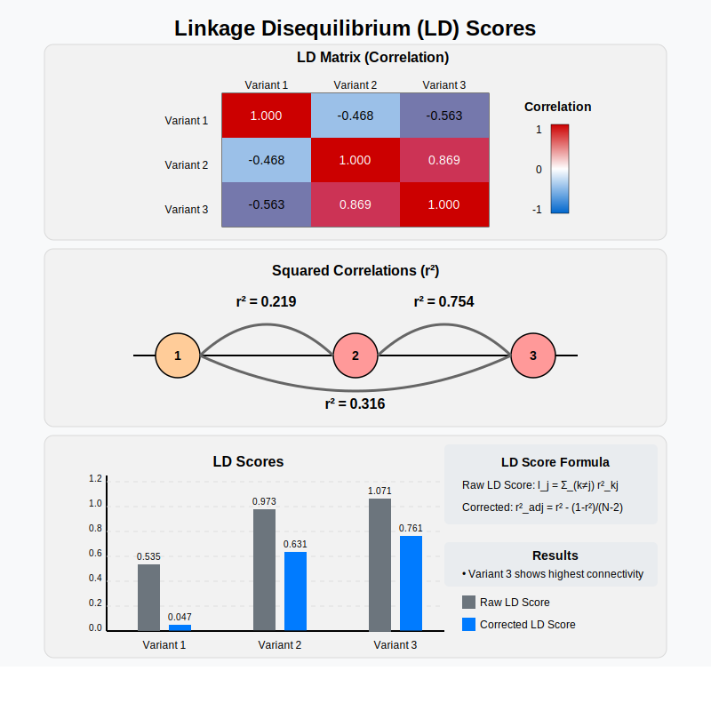

Linkage Disequilibrium Score¶
The LD score of a variant is a measure to describe how connected or tagged this variant is with other variants by summing up the squared correlation (r²) with every other variant under consideration.
Graphical Summary¶

Key Formula¶
The LD score for a SNP is the sum of LD \(r^2\) measured with all other SNPs:
Technical Details¶
The LD score is a measure of the extent to which a given variant is in linkage disequilibrium (LD) with other variants across the genome. It is used to summarize the amount of genetic information (in terms of LD) that a variant shares with all other variants in a region of interest. The LD score for a variant \(j\) is defined as the sum of the squared correlation coefficients \(r^2\) between that variant and all other variants in the genome, typically within a specified genomic window or region. Mathematically, the LD score for variant \(j\) is given by:
However, this is not an unbiased estimate. We can correct for the bias like this:
This score reflects how much a variant is correlated with other variants across the genome, providing insight into the local structure of LD around that variant.
Example¶
This example demonstrates the process of calculating Linkage Disequilibrium (LD) scores from a genotype matrix. It computes the correlation matrix based on the standardized genotype matrix, transforms it to squared correlations, and calculates raw LD scores. A bias correction is then applied to adjust for finite sample size effects, resulting in corrected LD scores that provide a measure of genetic variant connectivity.
# Clear the environment
rm(list = ls())
# Define genotypes for 5 individuals at 3 variants
# These represent actual alleles at each position
# For example, Individual 1 has genotypes: CC, CT, AT
genotypes <- c(
"CC", "CT", "AT", # Individual 1
"TT", "TT", "AA", # Individual 2
"CT", "CT", "AA", # Individual 3
"CC", "TT", "AA", # Individual 4
"CC", "CC", "TT" # Individual 5
)
# Reshape into a matrix
geno_matrix <- matrix(genotypes, nrow=5, ncol=3, byrow=TRUE)
rownames(geno_matrix) <- paste("Individual", 1:5)
colnames(geno_matrix) <- paste("Variant", 1:3)
alt_alleles <- c("T", "C", "T")
# Convert to raw genotype matrix using the additive / dominant / recessive model
Xraw_additive <- matrix(0, nrow=nrow(geno_matrix), ncol=ncol(geno_matrix)) # dount number of non-reference alleles
rownames(Xraw_additive) <- rownames(geno_matrix)
colnames(Xraw_additive) <- colnames(geno_matrix)
for (i in 1:nrow(geno_matrix)) {
for (j in 1:ncol(geno_matrix)) {
alleles <- strsplit(geno_matrix[i,j], "")[[1]]
Xraw_additive[i,j] <- sum(alleles == alt_alleles[j])
}
}
X <- scale(Xraw_additive, center=TRUE, scale=TRUE)
# calculate the LD
R = cor(X)
The LD matrix is:
R
| Variant 1 | Variant 2 | Variant 3 | |
|---|---|---|---|
| Variant 1 | 1.0000000 | -0.4677072 | -0.562500 |
| Variant 2 | -0.4677072 | 1.0000000 | 0.868599 |
| Variant 3 | -0.5625000 | 0.8685990 | 1.000000 |
# Get sample size and number of variants
N <- nrow(X) # Number of individuals/samples
M <- ncol(X) # Number of genetic variants
To calculate raw LD scores:
Sum squared correlations across each column
Subtract the diagonal (variant’s correlation with itself)
This gives the total genetic connectivity for each variant
R_sq = R^2
ld_scores_raw <- colSums(R_sq) - diag(R_sq)
The original LD scores are:
t(ld_scores_raw)
| Variant 1 | Variant 2 | Variant 3 |
|---|---|---|
| 0.5351562 | 0.9732143 | 1.070871 |
We then adjust the LD scores:
R_squared_adj_mat = R_sq
# Apply the adjustment formula to each non-diagonal element
for (i in 1:M) {
for (j in 1:M) {
# Apply the adjustment formula: r²_adj = r² - (1-r²)/(N-2)
R_squared_adj_mat[i, j] <- R_sq[i, j] - (1 - R_sq[i, j]) / (N - 2)
}
}
ld_scores_adjusted <- colSums(R_squared_adj_mat) - diag(R_squared_adj_mat)
The adjusted LD scores are:
t(ld_scores_adjusted)
| Variant 1 | Variant 2 | Variant 3 |
|---|---|---|
| 0.046875 | 0.6309524 | 0.7611607 |